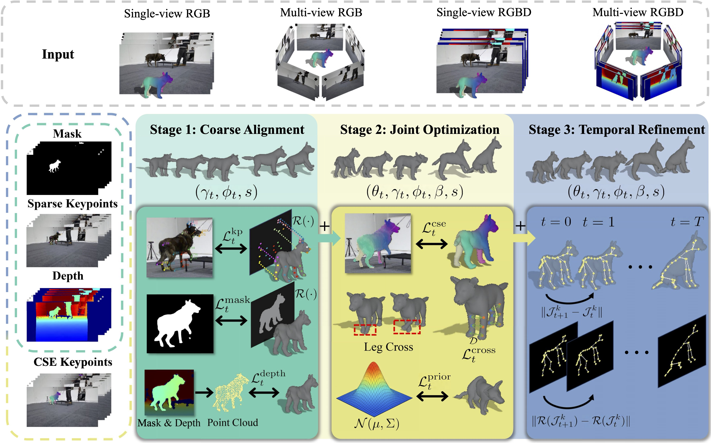

We present DogMo, a large-scale multi-view RGB-D video dataset capturing diverse canine movements for the task of motion recovery from images. DogMo comprises 1.2k motion sequences collected from 10 unique dogs, offering rich variation in both motion and breed. It addresses key limitations of existing dog motion datasets, including the lack of multi-view and real 3D data, as well as limited scale and diversity. Leveraging DogMo, we establish four motion recovery benchmark settings that support systematic evaluation across monocular and multi-view, RGB and RGB-D inputs. To facilitate accurate motion recovery, we further introduce a three-stage, instance-specific optimization pipeline that fits the SMAL model to the motion sequences. Our method progressively refines body shape and pose through coarse alignment, dense correspondence supervision, and temporal regularization. Our dataset and method provide a principled foundation for advancing research in dog motion recovery and open up new directions at the intersection of computer vision, computer graphics, and animal behavior modeling.

@article{wang2025dogmo,
title={DogMo: A Large-Scale Multi-View RGB-D Dataset for 4D Canine Motion Recovery},
author=Wang, Zan and Chen, Siyu and Mo, Luya and Gao, Xinfeng and Shen, Yuxin and Ding, Lebin and Liang, Wei,
journal={arXiv preprint arXiv:2510.24117},
year={2025}
}